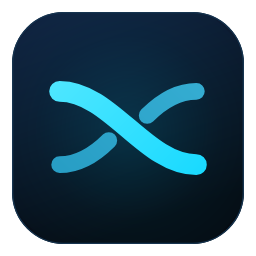
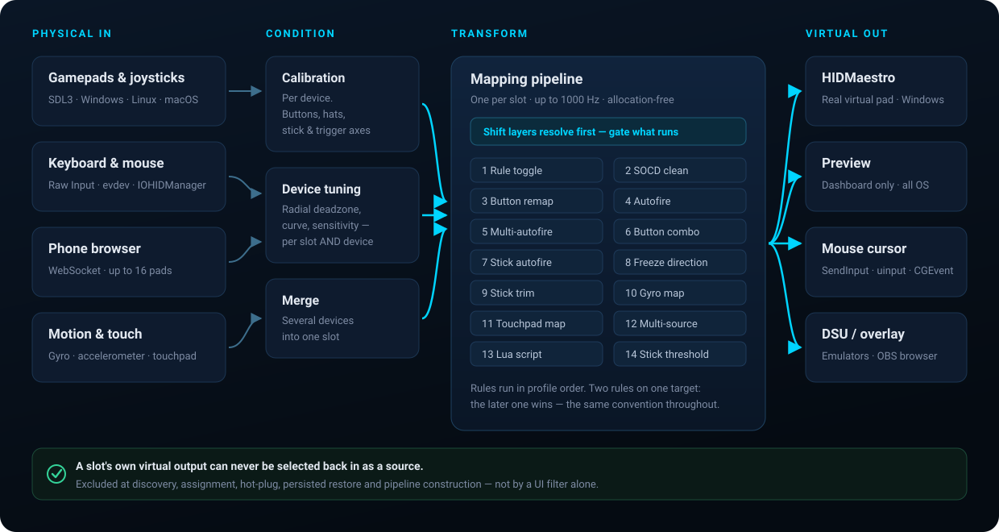
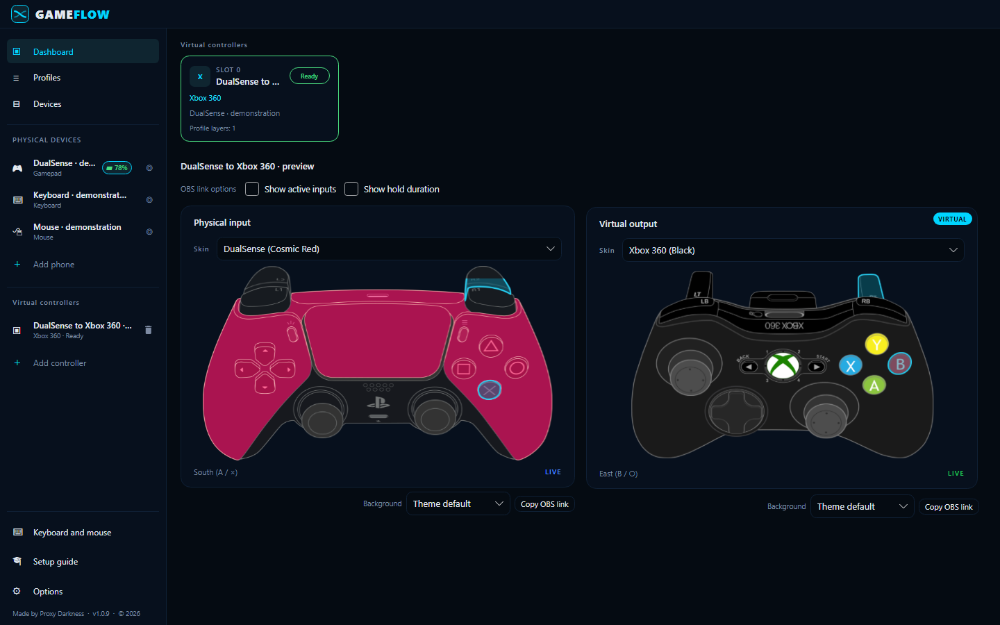
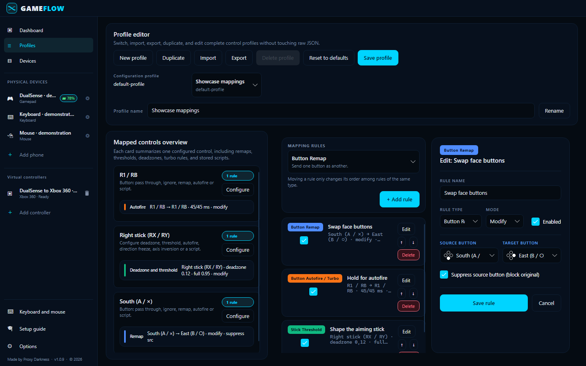
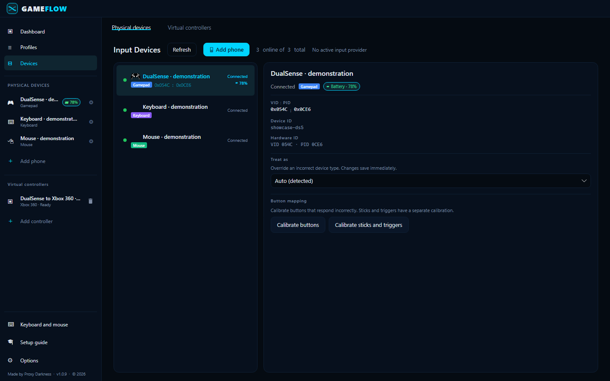
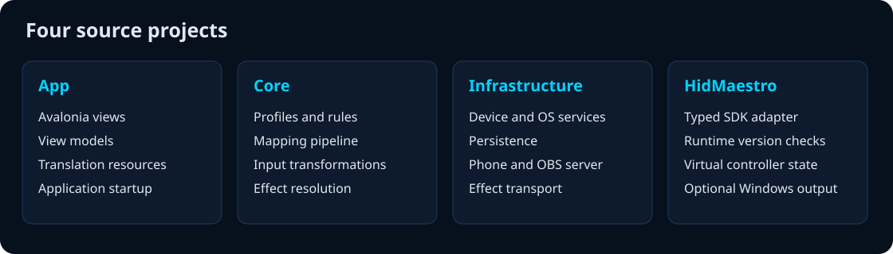

Any input in. Any controller out.
Cross-platform, multi-language and multi-controller remapping tool.
What it does
Every slot is an independent input to profile to output pipeline, running at up to 1000 Hz. Run several at once for local co-op, or split one device across several transformed outputs or even several controller as one!
Emit an Xbox 360, DualShock 4 or DualSense that games read as real hardware. User-mode through HIDMaestro. No kernel driver, no reboot.
Open a URL in any phone browser on your Wi-Fi. Anchored sticks, analog triggers, rumble, and the phone's own gyro. Up to 16 at once.
Full keyboard state synthesised into a gamepad snapshot, per physical device, on Windows, Linux and macOS alike.
Local, Player and World reference frames, dual-threshold smoothing that kills tremor while keeping flicks sharp, output to a stick or the mouse.
Fold many inputs into one output with six combine modes or a real expression compiler. if(s1 > 0.5, s2, 0). Sandboxed Lua when that isn't enough.
Hysteresis-shaped autofire that doesn't jitter at the threshold, and six shift-layer modes. Caps Lock for your controller.
Radial deadzones, curves and sensitivity per slot and per device. plus axis calibration that rescues third-party pads and PS2-era converters.
A transparent controller overlay served by the app itself. Paste a URL into a Browser source. No screen capture, no always-on-top window.
DSU / Cemuhook over UDP, so Cemu, Dolphin, Yuzu and Ryujinx read real gyro and accelerometer straight from a slot.
How it works
Calibration and per-device tuning run before any rule sees the input. Shift layers resolve first each tick and gate what runs. A slot's own virtual output can never be fed back in as a source.

Version 1.0.9
Actual GameFlow controls with isolated demonstration data and Preview output.



Platforms
Windows supports virtual gamepads through the optional HIDMaestro SDK. Linux and macOS use Preview gamepad output. macOS hardware tests remain open.
Gamepad and keyboard/mouse input, mouse output, and optional HIDMaestro virtual gamepads. HIDMaestro requires a compatible SDK and Administrator access.
Gamepad input via SDL3, keyboard and mouse through direct evdev reads, mouse output through uinput. Virtual gamepad output is not built yet.
Gamepad input via SDL3, keyboard and mouse per device through IOHIDManager, mouse output through CGEventPost. Virtual gamepad output is not built yet.

Get it now!
Grab the latest release, or build it yourself with the .NET 10 SDK.